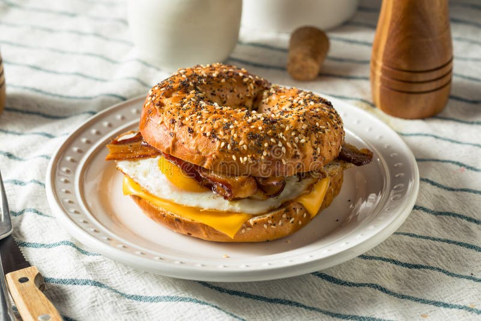

Breakfast Sandwich

Description
This recipe is how to make a delicious fried egg, bacon, and cheese bagel sandwich. It's quick and easy
Ingredients
- 2 Large eggs
- 3 slices of bacon
- 1 slice of cheese
- 1 bagel
Steps
- Set bagel in the toaster and bacon in the microwave
- turn heat to medium and butter the pan for the eggs
- start the microwave (around 4 minutes) and toaster
- crack eggs in pan, break yolks if desired, salt and pepper
- cover pan with lid until white is solid, flip and salt, pepper, cover
- pull bacon out and pat dry, put cheese on the eggs, move to bagel